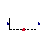
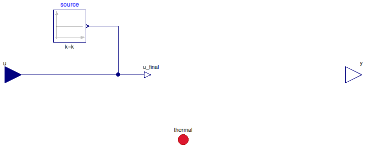
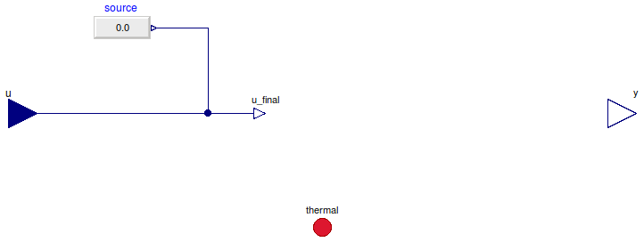

Table of Contents
- User's Guide
- Blocks
- Conditions
- Assemblies
- Regions
- Subregions
- Phases
- Species
- Connectors
- Characteristics
- Units
- Quantities
- Utilities
- Icons
Download
- Latest version (**Empty; please check back soon or contact kdavies4 at gmail.com.)
FCSys.Conditions.ByConnector.ThermalDiffusion
Conditions for a ThermalDiffusion connectorInformation
Extends from Modelica.Icons.Package (Icon for standard packages).Package Content
| Name | Description |
|---|---|
| Specify temperature (measure heat flow rate) | |
| Specify heat flow rate (measure temperature) | |
| Base classes (generally not for direct use) |
 FCSys.Conditions.ByConnector.ThermalDiffusion.Temperature
Specify temperature (measure heat flow rate)
Information
Extends from FCSys.Conditions.ByConnector.ThermalDiffusion.BaseClasses.PartialCondition (Partial model for a thermal condition).
Parameters
| Type | Name | Default | Description |
|---|---|---|---|
| Specification | |||
| Boolean | internal | true | Use internal specification |
| Measurement | |||
| RealOutput | y | thermal.Qdot | Measurement expression |
Connectors
| Type | Name | Description |
|---|---|---|
| input RealInput | u | Value of specified condition |
| ThermalDiffusion | thermal | Connector to transport material, momentum, and energy of a single species |
| Measurement | ||
| output RealOutput | y | Measurement expression |
Modelica definition
model Temperature "Specify temperature (measure heat flow rate)" extends FCSys.Conditions.ByConnector.ThermalDiffusion.BaseClasses.PartialCondition (final y=thermal.Qdot, source(y=298.15*U.K)); equation thermal.T = u_final; end Temperature;
FCSys.Conditions.ByConnector.ThermalDiffusion.HeatRate
Specify heat flow rate (measure temperature)
Information
Extends from FCSys.Conditions.ByConnector.ThermalDiffusion.BaseClasses.PartialCondition (Partial model for a thermal condition).
Parameters
| Type | Name | Default | Description |
|---|---|---|---|
| Specification | |||
| Boolean | internal | true | Use internal specification |
| RealExpression | source | redeclare Modelica.Blocks.So… | Source of internal specification |
| Measurement | |||
| RealOutput | y | thermal.T | Measurement expression |
Connectors
| Type | Name | Description |
|---|---|---|
| input RealInput | u | Value of specified condition |
| ThermalDiffusion | thermal | Connector to transport material, momentum, and energy of a single species |
| Measurement | ||
| output RealOutput | y | Measurement expression |
Modelica definition
model HeatRate "Specify heat flow rate (measure temperature)" extends FCSys.Conditions.ByConnector.ThermalDiffusion.BaseClasses.PartialCondition (final y=thermal.T); equation thermal.Qdot = u_final; end HeatRate;